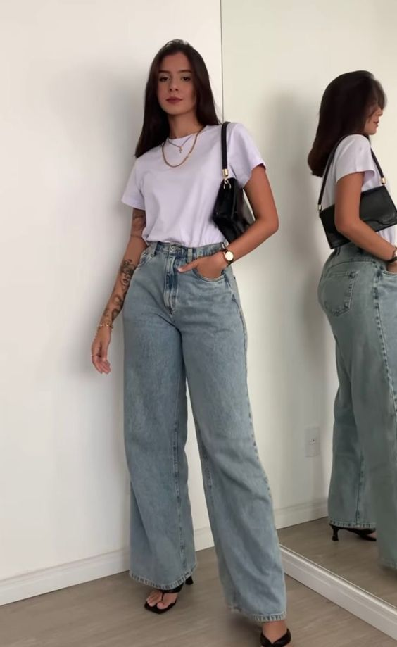
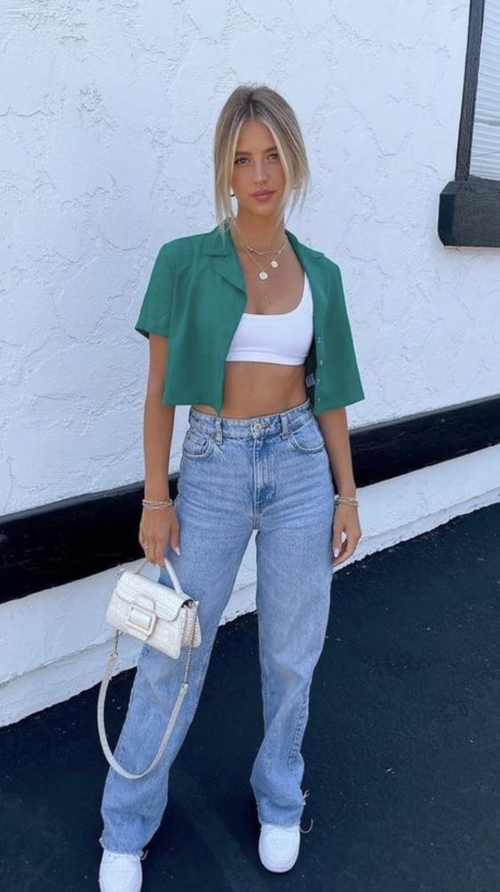

♥ Minimalist Style ♥
Estilo de roupa!
Nesse blog temos um estilo mais clean e minimalista.

Vamos proporcionar algumas bases para você ter dentro do seu guarda roupa!:
- Camisas lisas e sem estampas combinam com qualquer look.
- Calças de tons neutros e leves são as peças ideias para fechar qualquer combinação
- E nada menos importante, o jeans a peça chave pra tudo!  